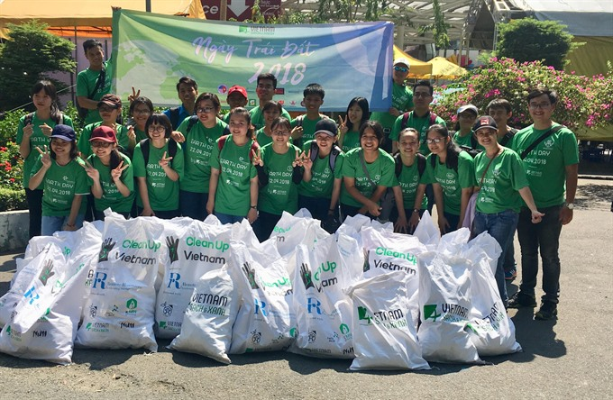

1. 课本书
身边的环保 - Protecting the environment around us
如果你觉得地球上的一点儿小污染没什么关系，那你可就大错特错了！环境污染会危害动物、植物以及人类自身。
有些生活在过去的动物，你今天再也看不到了，植物也面临着同样的危险。动植物的消失，部分原因是由于自然界的变化，比如洪水、地震等改变了它们生活的环境，但更大的原因则是人类对自然的破坏——有些地区的森林已经几乎被人砍光了，很多河流被污染，不再适合鱼类生存，有的地区原本是草原，如今已变为沙漠……从国际环保组织公布的数据可知，地球上一半以上的动植物正在消失，这是真实的情况，一点儿也不夸张。
人类自身也饱受污染的危害。有些地区地表水已污染，地下水又被过量使用，水资源短缺问题就连科学家们也不知道该如何解決，目前世界上有17%的人无法享用干净的饮用水，而每年死于与空气污染有关的疾病的人比死于车祸的还要多。这些数据确实令人不安。
一部分环境污染是由工业农业生产活动造成的，例如，大型工厂生产过程中，有的会产生大量废水；有的要大量燃烧煤炭，从而产生大量废气和废物。还有一部分污染和我们的日常生活密切相关，汽车尾气就是其中之一。此外，垃圾也会对环境造成严重的损害。
幸运的是，越来越多的人敏感地认识到了环境问题的严重，并自觉地投入到了保护地球的行动中。生产中，增加环保设施，减少污染物排放，调整能源消费结构，逐步向可再生能源转变；而在日常生活中，政变生活习惯，尽量减少生活垃圾，做到垃圾分类。同时，尽量多骑自行车，多选择公共交通，少使用私家车。这些为此付出努力的人们令人尊敬，取得的成绩也令人鼓舞。
地球是人类共同的家园，我们应该把它看作一个属于自己的大房间。房间脏了，消极的逃避和不符合实际的幻想都不能解决问题，为保持它的卫生每一个人都应付出行动，做出贡献。人类的命远由我们自己掌握，政变要靠我们自己。

1.1. 生词
| No. | Word | Meaning |
|---|---|---|
| 1 | 消失 | xiāoshī - v. to disappear, to vanish |
| 2 | 洪水 | hóngshuǐ - n. flood |
| 3 | 地震 | dìzhèn - v. earthquake |
| 4 | 破坏 | pò huài - v. to destroy, to damage |
| 5 | 砍 | kǎn - v. to cut, to chop, to fell |
| 6 | 生存 | shēng cún - v. to live, to subsist |
| 7 | 沙漠 | shāmò - n. desert |
| 8 | 公布 | gōng bù - v. to announce, to make public |
| 9 | 数据 | shù jù - n. data |
| 10 | 真实 | zhēn shí - adj. real, actual |
| 11 | 夸张 | kuā zhāng - adj. exaggerated |
| 12 | 资源 | zī yuán - n. resource |
| 13 | 车祸 | chēhuò - n. traffic accident |
| 14 | 不安 | bù’ān - adj. upset, disturbed |
| 15 | 工业 | gōng yè - n. industry |
| 16 | 农业 | nóng yè - n. agriculture |
| 17 | 生产 | shēng chǎn - v. to produce, to manufacture |
| 18 | 大型 | dàxíng - adj. large-scale |
| 19 | 工厂 | gōng chǎng - n. factory |
| 20 | 废 | fèi - adj. waste, useless |
| 21 | 燃烧 | rán shāo - v. to burn, to combust |
| 22 | 煤炭 | méi tàn - n. coal |
| 23 | 密切 | mì qiè - adj. close, intimate |
| 24 | 尾气 | wěi qì - n. exhaust gas, vehicle emission |
| 25 | 幸运 | xìng yùn - adj. lucky, fortunate |
| 26 | 敏感 | mǐn gǎn - adj. sensitive, susceptible |
| 27 | 自觉 | zì jué - adj. conscious, on one’s own initiative |
| 28 | 设施 | shè shī - n. installation, facilities |
| 29 | 能源 | néngyuán - n. energy resource |
| 30 | 逐步 | zhú bù - adv. gradually, step by step |
| 31 | 尽量 | jǐnliàng - adv. to the best of one’s abilities, to the greatest extent |
| 32 | 私（人） | sī (rén) - n. private |
| 33 | 尊敬 | zūnjìng - v. to respect, to esteem |
| 34 | 鼓舞 | gǔ wǔ - v. to encourage, to inspire |
| 35 | 消极 | xiāo jí - adj. passive, inactive |
| 36 | 幻想 | huàn xiǎng - n. fantasy, illusion |
| 37 | 贡献 | gòng xiàn - n./v. contribution; to contribute, to devote |
| 38 | 命运 | mìng yùn - n. fate, destiny |
| 39 | 掌握 | zhǎng wò - v. to take charge of, to control |
1.2. 注释
密切
“密切”, tính từ, có thể biểu thị quan hệ gần gũi, mật thiết. Ví dụ:
还有一部分污染和我们的日常生活密切相关，汽车尾气就是其中之一。
参加了这次环保活动后，两人便有了共同语言，来往也比先前密切了。
“密切” , còn có thể biểu thị（đối với các vấn đề）chú trọng, tỉ mỉ, thấu đáo. Ví dụ:
刘医生密切地观察着李妈妈病情的发展。
家长应和老师密切配合，形成合力，保持教育的一致性。
“密切” ,còn có thể làm động từ, có nghĩa làm cho quan hệ trở nên gần gũi mật thiết hơn. Ví dụ:
这条铁路的建成，大大密切了西南地区与首都的关系。
友好城市之间的交往密切了两国人民之间的友谊。
（1）。。。需要密切地控制。
（2）。。。密切了各国之间的贸易关系。
（3）。。。对，我们的关系现在不太密切。
尽量
phó từ, biểu thị trong một phạm vi nhất định nỗ lực đạt đến mức độ cao nhất. Ví dụ:
同时，尽量多骑自行车，多选择公共交通，少使用私家车。
老年人要尽量少吃油炸食品。
为了节约能源，请大家都尽量使用节能电器。
（1）。。。父母尽量让孩子学会做好自己的事情。
（2）。。。但我会尽量完成工作，早早回家。
（3）。。。你尽量做吧，答不上以两个问题无所谓。
逐步
biểu thị từng bước từng bước một, dùng trong những tình huống do còn người làm ra, thông thường không thể bổ sung cho từ ngữ có tính chất là tính từ. Ví dụ:
云计算应用市场规模正在逐步扩大。
·····调整能源消费结构，逐步向可再生能源转变。
记者了解到，现在受灾群众已逐步恢复了正常的生产生活。
（1）。。。平均温度将逐步升高。
（2）。。。逐步成为日常的习惯。
（3）。。。对的，学费会逐步降低。
- Phân biệt 鼓励 và 鼓舞:
共同点：Đều là động từ, đều có ý nghĩa làm cho người khác phấn khới, tăng thêm tự tin. Ví dụ:
- 这次谈话，使刘洋受到极大的鼓励/鼓舞。
不同点：
| 鼓励 | 鼓舞 | |
|---|---|---|
| 1 | Từ trung tính, có thể dùng ở những phương diện không tốt. 如：吸烟有害健康，你不阻止他，怎么还鼓励呢？ |
Từ mang nghĩa tốt 如：新产品的研制成功极大地鼓舞了科技人员。 |
| 2 | Ngữ nghĩa thiên về khích lệ đối phương tham gia vào một hoạt động nào đó. Chủ ngữ thường là người hoặc tổ chức. Thường dùng hình thức kiêm ngữ “鼓励某人做某事” 如：近些年，国家越来越鼓励大学生毕业后开办自己的公司。 |
Ngữ nghĩa thiên về tinh thần phấn chấn do sự ảnh hưởng nào đó. Chủ ngữ thường là sự vật 如：新的胜利给了全体队员很大的鼓舞。 |
| 3 | Không có ý nghĩa và cách dùng này. | Có thể làm tính từ, mô tả sự hưng phấn, phấn khởi. 如：年初制定的目标顺利实现，取得的成绩令人十分鼓舞。 |
1.3. 扩展
问题：资源
| No. | Word | Meaning |
|---|---|---|
| 1 | 金属 | jin1shu3 - kim loại metal |
| 2 | 黄金 | huang2jin1 - vàng, gold |
| 3 | 银 | yin2 - bạc, silver |
| 4 | 钢铁 | gang1tie3 - sắt thép, steel |
| 5 | 煤炭 | mei2tan4 - coal, than đá |
| 6 | 能源 | neng2yuan2 - năng lượng, energy |
| 7 | 原料 | yuan2liao4 - nguyên liệu thô, raw material |
| 8 | 资源 | zi1yuan2 - tài nguyên, resource |
1.4. 运用
环保，可以这样开始
每个人都是地球的守护者，每个人都可以为保护环境贡献自己的力量。我们不需要做惊天动地的大事，只要从身边小事做起，也能为地球带来巨大的改变。比如：节约用水—洗漱时关闭水龙头，洗澡时缩短时间，尽量使用节水龙头；节约用电—离开房间时关灯，使用节能电器，拔掉不使用的插头；减少浪费—购物时自带购物袋，尽量少使用一次性塑料制品，选择可再使用的物品；低碳出行—尽量步行、骑自行车或乘坐公共交通工具，减少开车；植树绿化—在家里或社区种植树木，净化空气，美化环境；宣传环保理念—积极参与环保活动，让更多人加入到保护环境的队伍。
1.5. 口语
- 说说你每天从身边观察到不环保的行为。
我住在胡志明市—一座越南人口最稠密的城市。越南也是一个发展中国家，城市周围都是大型工业区。因此，我很容易从日常生活中看到不环保的行为。
每天上班的时候，我都要使用摩托车，这种出行方式在我国非常流行。这种类型的私人车辆只能搭载一到两个人，但产生的排放量很大。减少交通拥堵或限制排放的效果都不如公共交通工具。但这里的公共交通不发达，非常不方便，所以我和很多人一样，每天都在骑摩托车。
路上我可以看到街道两边很多垃圾。人们随手乱扔垃圾，有的甚至将垃圾丢弃在河道、湖泊等水域中，严重污染了环境。我会买早餐和一杯咖啡，通常都装在塑料杯和塑料袋里。这些东西只能使用一次，城市每天都会产生大量这样的废物。
这些只是最明显的日常行为，只要走出城市，我们就可以看到更多的地区受到人类工业活动的严重污染。
- 结合自己的经历，谈谈你对环保的认识。
越南是一个自然资源丰富的国家，拥有美丽的山川、河流和森林。然而，近年来，越南的环境问题也日益严重，比如空气污染、水污染和白色污染等。越南正在用许多环境和自然价值换取经济发展，许多森林被种植园取代，工厂的建设没有控制外出气体和水的排放。人们在生活中也缺乏环保意识，使用野生动物产品的习惯导致许多生物正在逐渐消失。
作为一名越南人，我认为保护环境是每个人的责任。我们要从自身做起，养成良好的环保习惯，比如节约水电、减少垃圾、使用可再使用的物品等。我们还可以积极参加环保活动，比如植树、捡垃圾、宣传环保知识等。保护环境就是保护我们的家园，让我们携手共创美丽的越南。
- 请介绍几件生活中我们可以做到的环保事情。
《跟运用同样》
2. 作业本
2.1. 听力
1. 男：你能教教我怎么用这个程序吗？（cheng2xu4 - program, chương trình, phần mềm）
女：这个没你想象的那么难，我这儿有本书，你一看就懂了。
问：女的是什么意思？（C很容易掌握）
2. 女：明天去给老师拜年，是开车去吗？
男：老师家离地铁站很近，咱们也为绿色出行做点儿贡献吧。（đóng góp cho phát triển xanh）
问：男的想怎么去老师家？（C乘地铁）
3. 男：明天学校组织春游，让我们带个塑料袋。
女：对，把吃剩下的垃圾都装好，不要随地乱丢啊。（vứt lung tung, tùy tiện）
问：关于男的，下列哪项正确？（B明天要去春游）
4. 男：你说莉莉还会同意和我和好吗？(莉莉 li4li4 Lily)
女：我劝你死了这条心吧，别再抱什么幻想了。
问：对于莉莉，女的建议男的怎么做？（C放弃努力）
5. 女：这几天空气质量比较差，雾霾浓度很高。（wu4mai2 - khói bụi, nong2du4 - nồng độ）
男：家里的老人对空气污染比较敏感，最近最好少出门。（min3gan3 - nhạy cảm）
问：男的建议老人怎么做？（C减少外出）
6. 男：李老先生的那台手术，尽量安排在上午做吧。
女：我也是这么想的，早上精神好，就排在明天第一台吧。
问：关于李先生，从对话中可以知道什么？（B明天要手术）
7. 男：我跟刘方打过招呼了，他会带你的。
女：谢谢领导关心，不明白的地方我一定请教。
男：这是公司四季度的销售报告，你拿回去看看。（ji4du4 - quarter, quý）
女：好的，我好好学习学习，先熟悉一下业务。
问：关于女的，下列哪项正确？（C接手了新工作）
8. 女：复赛结果什么时候公布？
男：说是下个月5号前在比赛官方网站上查询。（cha2xun2 - tra cứu）
女：还早呢，这两天可以放松一下了。
男：是的，耐心等待吧。
问：复赛结果将通过什么方式公布？（D比赛官网）website của đơn vị chính thức
9. 男：你今天怎么无精打采的，昨晚失眠啦？
女：还说呢，下月的订单一半还没完成呢，愁死我了。
男：现在生意都不好做，你也别太着急。
女：下午要见个客户，成不成就看他了。
问：女的现在的心情怎么样？（D紧张不安）
- 女：明天是10号，有一些重要的经济数据将要公布。
男：感觉经济的压力还是比较大呀。
女：我现在最担心的是我的股票明天会怎么样。
男：我觉得说不定还涨呢，房价最近不就涨了嘛。
问：根据对话，女的现在担心什么？（A股票）
女：你说这空气中的污染物都是从哪儿来的呢？
11-12.
男：大部分是城市周边地区工厂排放的废气，另外，汽车尾气也是一大污染源。
女：我每天都密切注意天气预报中公布的 PM2.5数据。
男：现在治理力度不断加强，今年的情况已有所改善。
女：虽说好了一些，但离满意还差得远呢。我家已经买了两台空气净化器了。
男：老人、小孩是敏感人群，要特别注意防护，外出最好戴口罩。（phòng hộ）
11．对城市现在的空气污染，女的有何看法？（C治理效果还不满意）
12．面对空气污染，男的提到应该怎么做？（B外出戴口罩）
13-14.
有研究显示，平均每个家庭每天要开冰箱门22次。如果这个家里有个充满好奇心的孩子，那么次数会更多。每开一次门，冰箱中的冷空气涌（yong3 - surge）出，外面的热空气灌（guan4 - irrigation, tràn vào）入，都会使得冰箱要消耗（xiao1hao4 - tiêu hao, consume）更多的电力来重新制冷（re-cooling）。
因此，不要等到打开冰箱门以后再考虑自己要拿什么。先想好，再开门。取出东西后，立刻把门关上，减少冰箱中冷空气的流出和外界热空气的流入。此外，别忘了跟你的父母确认冰箱的温度设置是否合理，顺便告诉他们：保持冰箱蒸发（zheng1fa1 - bay hơi, evaporation）器的清洁，也能提高它的工作效率。
13．关于家中的冰箱，这段话提到哪种情况？（C孩子爱开冰箱）
14．这段话建议冰箱省电的方法是什么？（A想好拿什么再开门）
2.2. 阅读
15-18
有这样一个笑话：一个十分胆小的人去医院拔牙（ba2ya2 - extract a tooth, nhổ răng），医生想15 D尽量让他镇定（trấn tĩnh），就递给他一杯酒。病人很听话，16 C接过杯子一次而尽。医生以为他酒量不错，怕没有效果，就又递给了他一杯，这个病人又喝光了。
“好了，”医生说，“现在，你有勇气拔牙了吧?”
可没想到，这个原本胆小的病人却大声地叫道：“哼（heng1 - hừ）!我倒要看看，有谁敢来碰（peng1 - động vào）我的牙!”
企业激励员工的目的是为了17 B鼓舞员工的士气和提高他们的工作效率，但很多管理者却犯（fan4 - phạm）了和前面医生一样的错误，他们常常鼓励过了头，这容易使有些员工产生骄傲自大（tự cao tự đại）的心理，不但对他们的工作无益，还会对别的员工产生18 A消极影响。
19 A许多人自觉参与环保行动
越来越多的人敏感地认识到了环境污染问题的严重，并自觉地投入到了保护地球的行动中。生产中，增加环保设施减少污染物排放，凋整能源消费结构，逐步向可再生能源转变。而在日常生活中，改变生活习惯，尽量减少生活垃圾，做到垃圾分类；同时，尽量多骑自行车，多选择公共交通，少使用私人汽车。为此付出努力的人们令人尊敬，取得的成绩也令人鼓舞。
20 D冰岛的自然景观种类丰富
冰岛（bing1dao3 - Iceland）是一片净土，有最干净的空气最纯净（chúnjìng - thuần khiết）的水、最活跃的火山，以及最洁白（jie2pai2 - pure white）的冰川（glacier - sông băng）。地下有火，地上有冰，所以冰岛被称为冰火之国。这里的四季更以完全不同的风貌展现在世人面前，无论是壮观（zhuang4guan1 - spectacular, tuyệt vời）的瀑布（pu4bu4 - waterfall, thác nước）、宁静（ning2jing4 - quiet）的湖泊，还是成片的浮冰（fu2bing1 - ice floe tảng băng），更或是雪山、荒原、海岸（an4 - bank, bờ），都会让你惊喜得忘记呼吸。
21 B废气中的二氧化碳是海洋酸化
废气排放的二氧化碳（er4yang3 hua4tan4 - carbon dioxide, CO2）中，大约有25%被海洋吸收并转化（chuyển hóa）成碳酸（tan4suan1 - axid carbonic），这造成了海洋中酸碱度（suan1jian3du4 - độ PH, axit và kiềm）的改变，使贝壳（bei4ke2 - shell, vỏ sỏ）类生物数量减少，同时威胁到珊瑚礁（shan1hu2jiao1 - rạng san hô, coral reef）及其（ji2qi2 - and its, and their）周边鱼类的健康。据统计，全球有大约10亿人以海洋鱼类作为摄入蛋白质的主要途径（tu2jing4 - way, channel）。因而海洋酸化（suan1hua4 - axid hóa）在影响海洋生物的同时，也严重威胁到人类的食品安全。
22 D绿色沙漠的生态环境是脆弱的
“绿色沙漠”是指大面积（miànjī - area）种类单一的绿色树林，其年龄、高矮一致，且十分密集（mi4ji2 - compressed, crowded together, dày đặc）。密集单一的树冠（shu1guan1 - treetop）层完全遮挡（zhe1dang3 - to shelter, chắn mất, che khuất）了阳光，使下层植被（zhi2bei4 - plant cover, thảm thực vật）无法生长，林下缺乏中间的灌木（guan4mu4 - bush, cây bụi）层和地面的植被。单一的树种导致生物多样（đa dạng sinh học）性差，保持水土能力也不强，如果遇到病虫害（bing4chong2hai4 - plant diseases, sâu bệnh），就会大面积死亡，导致生态环境迅速恶化 (xấu đi nhanh chóng)。
23-25
一天，一位医生将一群爱酒如命的酒鬼召集到一起，在他们面前做了这样一个实验：
医生将两只杯子放到了桌上，一杯装满了清水，另一杯装满了白酒。他把一只毛毛虫先丢进装满清水的杯子，大家看着虫子在清水里游动，慢慢地又爬了出来。然后，医生又将毛毛虫抓了起来，投进装白酒的杯子，虫子在酒里挣扎了一会儿就死去了。
看了这个实验后，酒鬼们面面相觑（），你看看我，我看看你。屋子里沉默了好长一段时间。正当医生准备对他们说明酒精对人体有害的时候，在屋子的最后排传来一个声音：“医生，我明白了，只要我们多喝酒，那我们肚子里就决不会生虫子!”
你们看，即使是一种正确的观念，也总有人站在相反的角度去理解。对这些人来讲，过多的劝说是没有太大作用的。所以不要把你的时间花赉在“无用功”上。
23 B饮酒对健康的危害
24 D沉默无语
25 C付出要用对地方
26-28
位于内蒙古自治区西部的阿拉善盟，生长着一种具有补气（bu3qi4 - bổ khí）、补血（bổ máu）功能的名贵中药材—肉苁蓉，人们称赞它为“沙漠人参”（nhân sâm sa mạc）。梭梭，是生长在沙漠边缘（biên viễn, rìa）的小乔木（qiao2mu4 - cây nhỏ），它的根系（gen1xi4 - root system, hệ rễ）非常发达，极耐干旱（gan1han4 - hạn），是防风固沙的优良树种。如果人们要找肉苁蓉就必须先找到梭梭，这是因为肉苁蓉的生长完全依靠梭梭，它是生长在梭梭根部的一种寄生（ji4sheng1 - ký sinh）植物，靠梭梭的根系供给（gong1ji3 - cung cấp, supply）菅养、水分，完成生长发育（fa1yu4 - to growth）。
在阿拉善，梭梭林是保护沙漠生态的重要植被。可是从20世纪90年代开始，这里的梭梭林开始大面积退化（tui4hua4 - thoái hóa, degenerate）。原因是梭梭不仅是肉苁蓉的寄主，还是阿拉善双峰驼最钟爱的食物。牧民（mu4min2 - người chăn nuôi, herdsman）长期超载（chao1zai4 - overload, quá mức）放牧（fang4mu4 - to graze, to herd, chăn thả）造成了梭梭林面积的减少，除此之外，当地人大面积砍伐（kan3fa2 - to cut down, chạt phá）梭梭林来满足冬季取暖（giữ ấm）的生活方式，同样带来了不良的后果。
近些年，当地政府在实行退牧还林政策（zheng1ce4 - chính sách, policy）的同时，也在大力推广新型（xin1xing2 - new type）能源的普及（pu3ji2）利用，帮助牧民改善传统的生活方式。现在牧民的家里都用上了煤气灶（mei2qi4zao4 - coal gas, bếp ga）、电、太阳能。可是梭梭林的数量依然越来越少。这是因为野生（ye3sheng1 - wild, hoang dã）肉苁蓉的价格近年持续走高，从而吸引了大批外来人员涌入（yong3ru4 - to come pouring in）阿拉善，疯狂（feng1kuang2 - điên cuồng）盗挖（dao4wa1 - đào）野生肉苁蓉。他们不仅毁坏（hui3huai4 - hủy hoại, damage）了肉苁蓉资源，更造成梭梭林持续退化，破坏了阿拉善的生态防线（fang2xian4 - defensive of perimeter, phòng tuyến）。
科研人员经过几年潜心（qian2xin1 - tập trung vào, concentrate）研究，经历无数次的失败之后，终于取得了人工培育（pei2yu4 - cultivate, cày cấy）肉苁蓉的成功，从而制止（zhi4zhi3 - ngăn chặn, to put a stop）了对梭梭林的破坏。现在，阿拉善已经封（feng1 - to seal）育梭梭林接近200万亩（mu3 - mẫu），人工造林40万亩，在大漠边缘重新筑（zhu4 - to build, construct, xây dựng）起了一条绿色的生态防线。
26 A药用价值很高
27 D盗挖肉苁蓉时的破坏
28 C沙漠生态防线的重建
2.3. 书写
环保、掌握、自觉、破坏、贡献
保护环境，人人有责。我们要树立环保意识，掌握环保知识，自觉养成良好的环保行为，共同守护我们的家园。我们不能做破坏环境的事情，要节约资源，减少污染，为环保贡献自己的力量。只有每个人都行动起来，才能创造一个更加美丽、健康的环境。